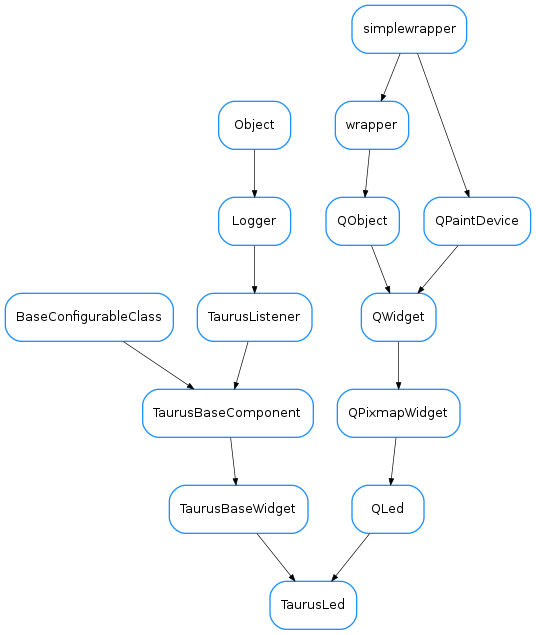

TaurusLed¶

-
class
TaurusLed(parent=None, designMode=False)[source]¶ Bases:
taurus.qt.qtgui.display.qled.QLed,taurus.qt.qtgui.base.taurusbase.TaurusBaseWidgetA widget designed to represent with a LED image the state of a device, the value of a boolean attribute or the quality of an attribute.
-
DefaultFgRole= 'rvalue'¶
-
DefaultModelIndex= None¶
-
DefaultOffColor= 'black'¶
-
DefaultOnColor= 'green'¶
-
fgRole¶ This property holds the foreground role. Valid values are:
- ‘value’ - the value is used
- ‘w_value’ - the write value is used
- ‘quality’ - the quality is used
Access functions:
-
model¶ This property holds the unique URI string representing the model name with which this widget will get its data from. The convention used for the string can be found here.
In case the property
useParentModelis set to True, the model text must start with a ‘/’ followed by the attribute name.Access functions:
TaurusBaseWidget.getModel()TaurusLabel.setModel()TaurusBaseWidget.resetModel()
See also
-
modelIndex¶ This property holds the index inside the model value that should be displayed
Access functions:
See also
-
offColor¶ This property holds the preferred led color This value is used for the cases where the model value does not contain enough information to distinguish between different Off colors. For example, a bool attribute, when it is False it is displayed with the off led but when it is true it may be displayed On in any color. The prefered color would be used in this case.
Access functions:
-
onColor¶ This property holds the preferred led color This value is used for the cases where the model value does not contain enough information to distinguish between different On colors. For example, a bool attribute, when it is False it is displayed with the off led but when it is true it may be displayed On in any color. The prefered color would be used in this case.
Access functions:
-
setOffColor(color)[source]¶ Sets the preferred led off color :param status: the new off color :type status: str
-
setOnColor(color)[source]¶ Sets the preferred led on color :param status: the new on color :type status: str
-
useParentModel¶ This property holds whether or not this widget should search in the widget hierarchy for a model prefix in a parent widget.
Access functions:
TaurusBaseWidget.getUseParentModel()TaurusBaseWidget.setUseParentModel()TaurusBaseWidget.resetUseParentModel()
See also
-